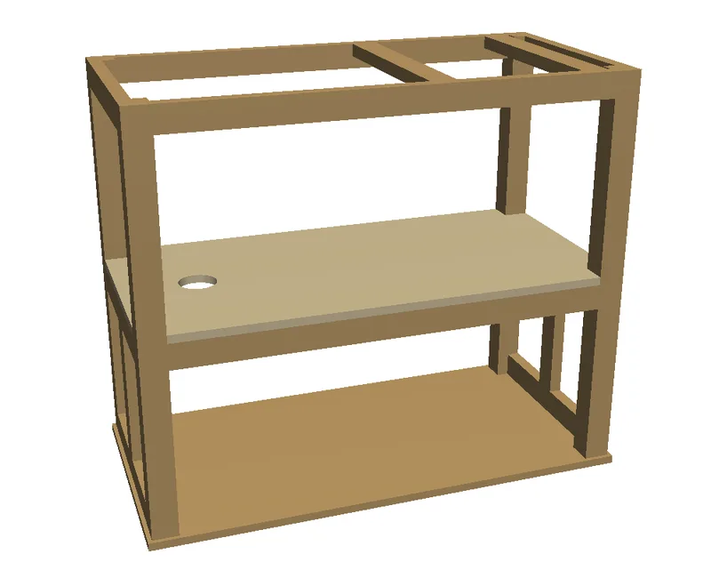
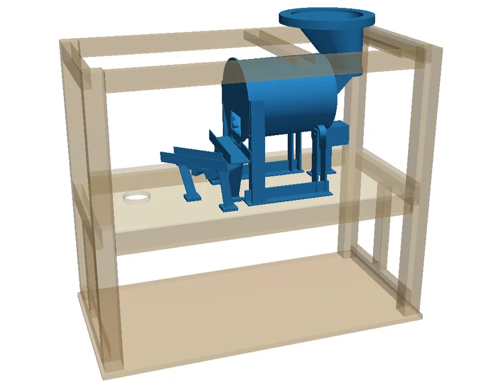
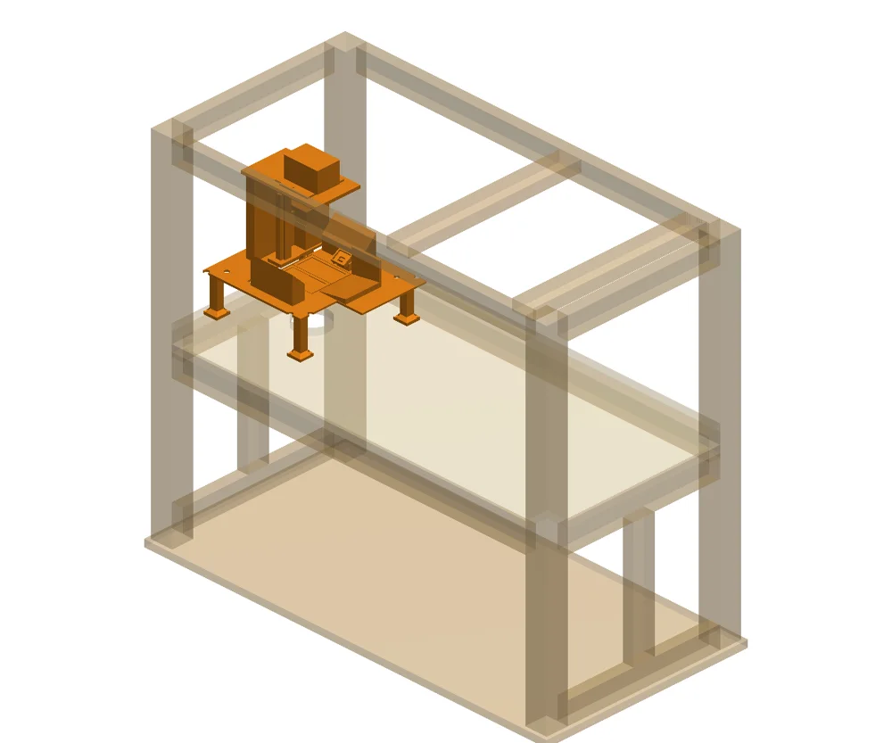
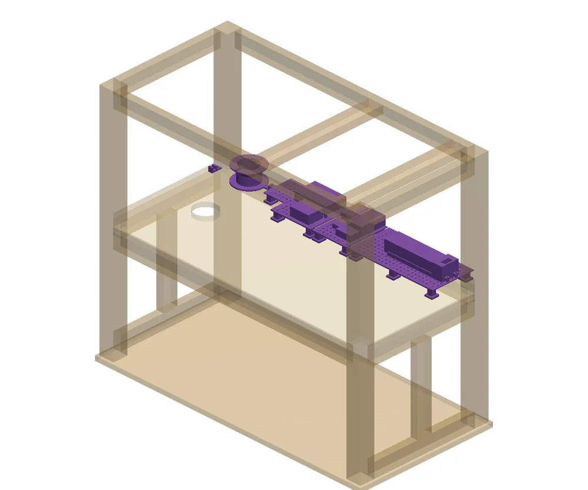
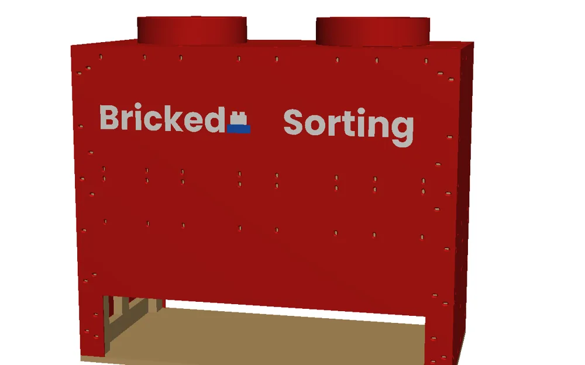
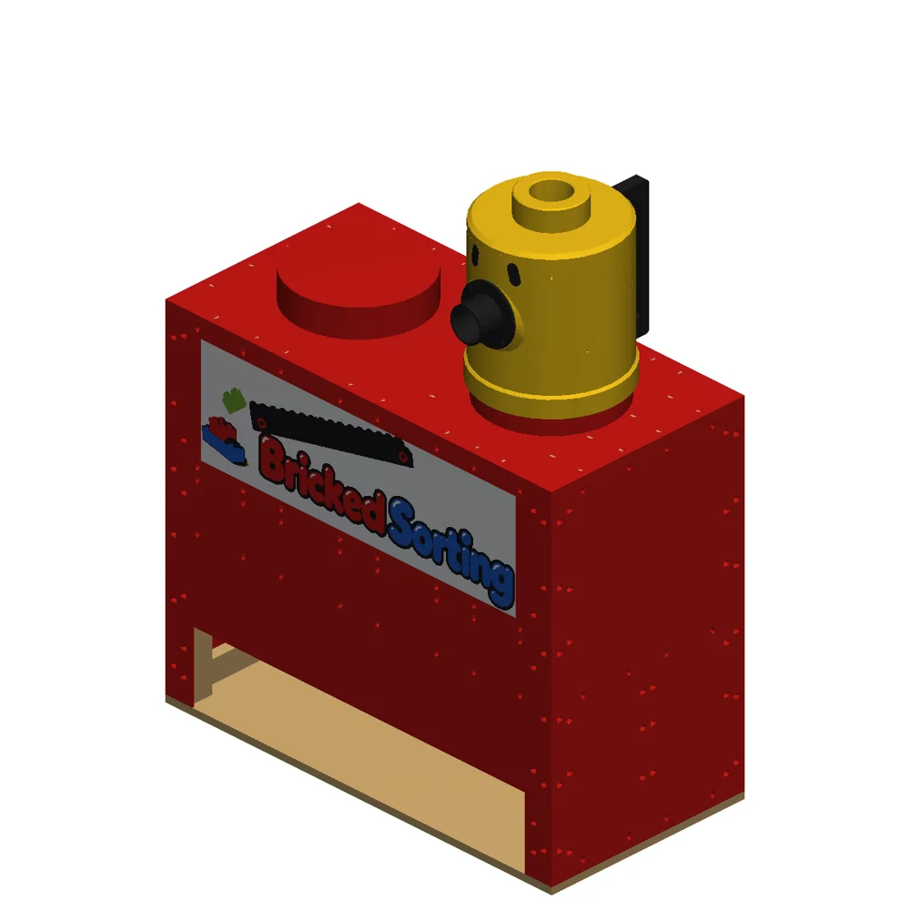

A LEGO sorter that keeps count.
Pour in a box of LEGO. A camera identifies each piece, a lift and turning scoop drop it into one of 16 bins, and the dashboard keeps track of what you own and what has gone missing.
01[How it works]
Isolate
A drum and two vibrating trays spread the pile out and send one piece at a time onto the scanner.
Identify
A camera takes a picture. A server on our home lab decides: brick or other piece, and which color group.
Indicate
A lift takes a scoop to the right floor, the scoop turns to the right bin, and trapdoors drop the piece in. Each bin has a switch that notes when it is opened.
02[Build]
How it goes together
The machine is a wood frame with one stage added at a time. Each picture shows the frame from the front with one stage in color.









03[Team]
Team
- Branden Adsuarabja.adsuaracloud.com ↗Project lead and integration · Kratos server · website
- Vivek GoorlaIsolate · code and testing
- Ethan RocheIdentify
- Marshall WongIndicate · documents
Instructor: Vlad Ionescu · Tech 190A, Senior Project I, Fall 2026 · Aviation and Technology Department, San José State University
04[Bin codes]
Bin codes
Every bin has a code: floor, then slot. Floor 1 is the bottom row (bricks), floor 2 is the top row (everything else). Slot 8 catches colors the camera can't place.
| Slot | Color group | Floor 2 (other) | Floor 1 (bricks) |
|---|